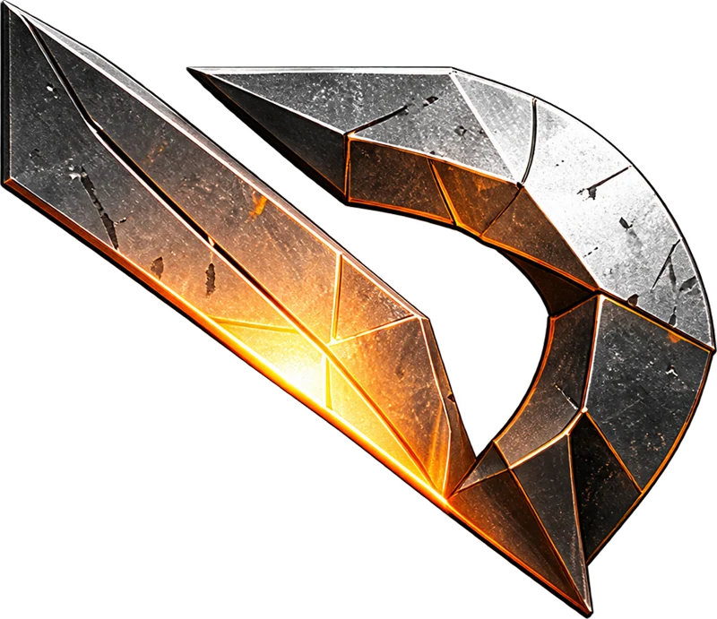
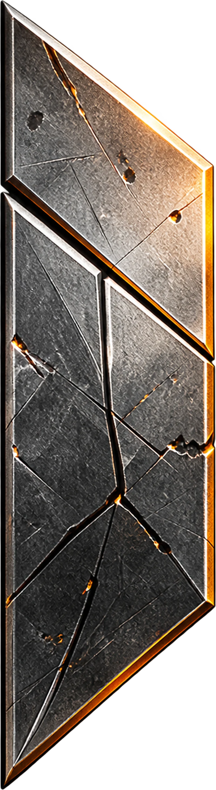
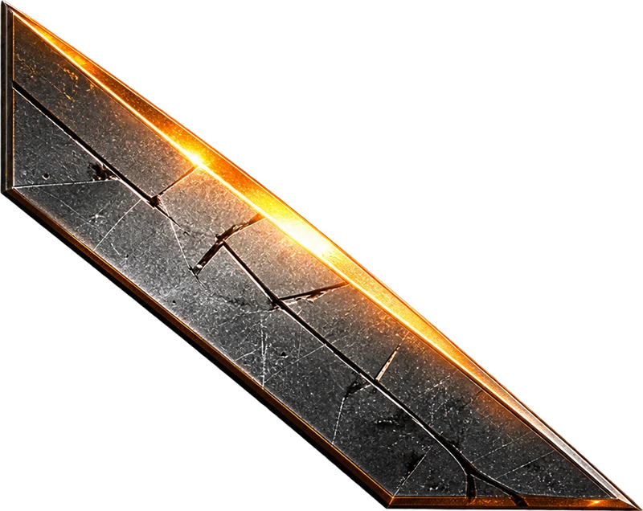
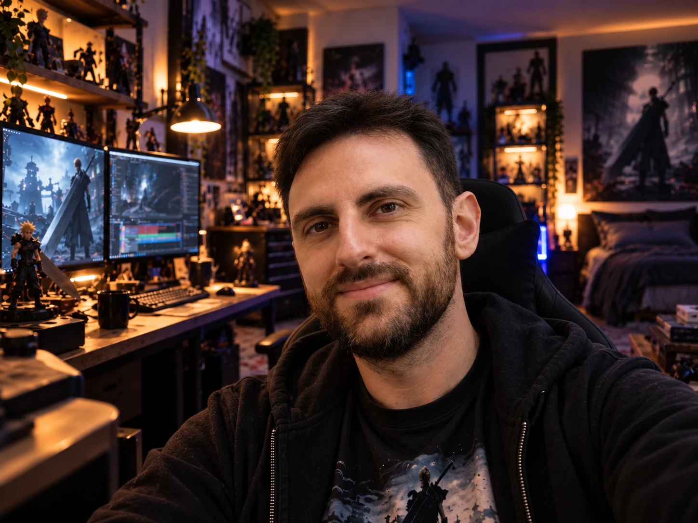

ESTUDIO INDEPENDIENTE DE VIDEOJUEGOSINDEPENDIENTES POR ELECCIÓN
IDEAS LOCAS.BUENASPARTIDAS.
Hacemos los videojuegos que siempre hemos querido jugar. Ideas que nacen de un «¿y si…?» y se convierten en experiencias inesperadas, atrevidas y, sobre todo, divertidas. Porque las mejores ideas no siempre son las más sensatas.



01 /SALIDOS DE LA FORJA
CADA JUEGO.
UNA LOCURA PROPIA.
No creemos en hacer siempre lo mismo. Cada idea merece sus propias reglas, su propio universo y su propia forma de divertir.
CoinsPiracy
DOS PROYECTOS. UNA MISMA FIRMA. / RODEFORGE INTERACTIVE
02 /DETRÁS DE LA FORJA HAY UN JUGADOR
RODE / RODEFORGE INTERACTIVEDE JUGADOR
A CREADOR.
Toda una vida jugando. Demasiadas ideas como para dejarlas escapar.

Soy Rode.
Llevo más de 15 años desarrollando software y he pasado prácticamente toda mi vida jugando a videojuegos, imaginando mundos y pensando cómo serían las experiencias que siempre he querido jugar.
RodeForge Interactive nace de esa inquietud: transformar ideas en videojuegos reales.
Aquí no perseguimos fórmulas prefabricadas. Nos gusta experimentar, mezclar mecánicas, probar cosas inesperadas y buscar esa sensación que hace que una partida termine convirtiéndose en una historia que quieres contar.
Además de crear juegos, actualmente soy Head of Data en una empresa con presencia global. Mi experiencia de más de 15 años corresponde al desarrollo de software empresarial.
«Un estudio independiente. Muchas ideas. Y unas ganas enormes de jugar».
Rode
Creador de RodeForge Interactive
También participo en el podcast de GamelxCreador de RodeForge Interactive
03 /EL ADN DE RODEFORGE
HECHOS PARA JUGAR.
LIBRES PARA CREAR.
CURIOSIDAD SIN LÍMITES
Las grandes ideas suelen empezar con una pregunta absurda: ¿y si…?
DIVERSIÓN PRIMERO
Una buena mecánica vale más que mil promesas. Queremos juegos que apetezca jugar.
INDEPENDENCIA CREATIVA
No tenemos por qué seguir una fórmula. Preferimos experimentar, equivocarnos, aprender y volver a intentarlo.
04 /PUBLISHERS Y COLABORADORES
¿BUSCAS
ALGO DIFERENTE?
HablemosEn RodeForge Interactive apostamos por ideas con identidad propia. Nos interesa conectar con publishers y colaboradores que compartan nuestra pasión por las experiencias originales.
Conoce los proyectos, comparte tu visión y exploremos cómo llevar estos juegos más lejos. Hablemos de publishing, distribución o colaboración creativa.
Publicación y distribuciónColaboración creativaPresentación de proyectos
Solicitar una presentación05 /LA PRÓXIMA CHISPA
Abiertos a buenas conversaciones¿FORJAMOS
ALGO JUNTOS?
rodeatope@gmail.com
Una idea, una propuesta o un simple hola.
El siguiente paso empieza aquí.